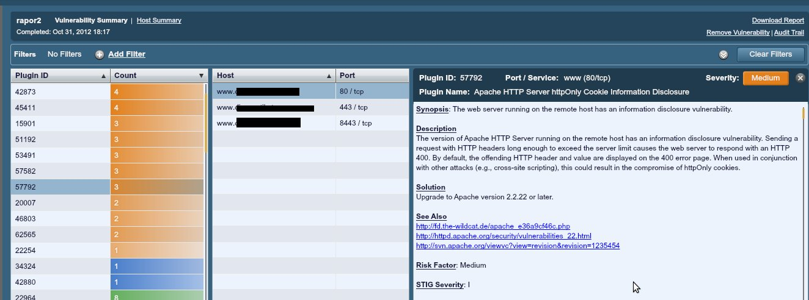

Yazımızda, başlangıç ve tanıtma amacıyla gerek kendi sistemimizi gerekse uzaktaki sistemleri test etmeye yarayan, sistemlerimizi kontrol etmeye ve devam eden süreçleri ve sonuçlarını izlemeye yardımcı olan birkaç araca değineceğiz.
Nessus
Nessus, sistemimiz veya herhangi bir alan adımız için birtakım sorgulamalar yapan, testler uygulayan ve rapor ile sonuç bildiren bir nevi sağlamlık, uygunluk test aracıdır.
Nessus ile sistemimiz veya ağımızdaki bir bilgisayar üzerinde kontroller yapabiliriz. Bu kontrol sonucu alacağımız rapor ile çalışan servisleri ve kullanılan portları görebilir, risk içeren durumlar için de çözüm önerisi ile birlikte yapmamız gereken müdahaleyi belirleyebiliriz.

Aynı zamanda Nessus ile uzaktaki bir sisteme de test uygulayabiliriz. Örneğin bir IP adresi arkasındaki makineye test uygulayıp gereklilikler üzerine kontrol yapabiliriz. Bu kontrol sonucu alacağımız rapor ile, örneğin bu bir web sayfasını barındıran bir sistem olsun, “SSL ile ilgili bir problem var mı?”, “Imap, Pop ve diğer protokoller ile ilgili bilgi veya alarm niteliğinde bir sonuç var mı?” gibi sorulara cevap alabiliriz.
Nessus’u kurup çalıştırmak için neler yapmamız gerekiyor bir bakalım. Önce
http://www.tenable.com/products/nessus/nessus-download-agreement
adresinden Nessus uygulamasını indirmemiz gerekiyor. Yükleme sayfasını açtığımızda önce ‘Yükleme Sözleşmesi’ çıkar ve indirmemiz için kabul etmemiz gerekir. Yine bu sayfada “To use Nessus, you need an activation code. Obtain one here.” bağlantısını kullanarak aktivasyon kodu da almamız gerekmekte. Zira çalıştırmamız için aktivasyon kodunu girerek Nessus’u kayıt ettirmemiz şart. Sonrasında gelen sayfada ilgili .deb paketini indirip
dpkg -i Nessus-5.0.1 …..deb
komutu ile .deb paketimizi sistemimize kurmalıyız.
Kurulumu yapıp aktivasyon kodumuzu da aldıktan sonra tarayıcımızdan
https://localhost:8834/register/
adresini açarak Nessus’u aktive ediyoruz. Ardından yine tarayıcımızdan
adresini çağırdığımızda Nessus açılacak ve bizden giriş yapmamızı bekleyecek. Root kullanıcı adını kullanarak giriş yapıyoruz. Gelen ekranda menüyü görmekteyiz. Buradan Scans düğmesini kullanarak tarama yapabilir, kayıt edip Reports düğmesi altında saklayabiliriz.
Şimdi örnek olarak alınmış iki raporu temel anlamda inceleyelim.

İlk örneğimizde smb isimli servis için yapılan kontrolde 139 ve 445 numaralı portlar kullanılmaktaymış. Bu portların kullanılması, dolayısıyla açık olması ile ilgili açıklamayı “Description” alanında görmekteyiz. Severity alanı yanında İnfo-Bilgi mesajı olduğunu, herhangi bir risk taşımadığını ve çözüme gerek olmadığını görüyoruz. İncelediğimiz bu sonuca göre bilgi bazında bir dönüş aldık ve riskli bir durumla karşılaşmadık.
İkinci örneğimize bakalım. Aşağıda bir alan adının taraması sonucu oluşan raporu görmekteyiz.

İncelemek istediğimiz satırı seçtiğimizde detayları ve çözüm önerisini görebiliyoruz.

Satırın detayında gördüğünüz gibi Severity=Medium olan, yani orta seviye bir güvenlik açığı bulunmakta. Bununla ilgili açıklamayı Description kısmında görüyoruz. Çözüm önerisi olarak da Apache servisini 2.2 veya daha yukarısına güncellememiz gerektiği yazmakta.
İşte temel bir bakışla Nessus, kontrol ettiğimiz sistemimizle ilgili güvenlik testleri uygulamamızı ve bilgiler edinmemizi sağlayan başarılı bir araçtır. Kullanıcılar için vazgeçilmezdir.
Nmap-Zenmap
Nmap ile belirlediğiniz bir bilgisayarın işletim sistemini, açık portlarını ve portları kullanan servislerinin tespitini yapabilirsiniz.
Nmap -v -A www.google.com //komutuyla google.com adresindeki sistemi,
nmap -v -sP 192.168.0.9/16 //komutuyla ağdaki bilgisayarı gözden geçirebilirsiniz.
Örneğin resimde gördüğünüz gibi yaptığımız tarama sonucunda

21 portu ProFtpD servisi tarafından kullanılıyor ve açık. 80 portu açık ve Httpd servisi tarafından kullanılıyor. 110 portu açık ve pop3d servisi kullanıyor. 113 kapalı ve 143 açık Imapd kullanıyor. 465 portu açık smtpd kullanıyor.
Man nmap komutu ile nmap ‘in yardım sayfasına ulaşabilir. Kullanımı ile ilgili örneklere ulaşabilirsiniz.
ZenMap ise nmap uygulamasının grafik arayüzlü hâlidir. ZenMap uygulamasını
sudo apt-get install zenmap
komutu ile kurar, uçbirime “zenmap” yazarak çalıştırırız. Zenmap uygulamasında da nmap gibi sonuçlar alırız. Zenmap ekranına bakacak olursak

Nmap Output sekmesinde yaptığımız taramanın sonuçlarını görürüz. Ports/Hosts sekmesi, tarama yaptığımız sistemde aktif olarak kullanılan portları ve kullandığı servisleri versiyonları ile birlikte listeler. Topology sekmesinde, yaptığımız taramalar sonucu oluşan tarama haritamızı görüntüleyebiliriz. Bu ayrıca sistemimizden yapılan çıkış noktalarını da göstereceği için aydınlatıcı bir ağ haritamız olarak da nitelendirilebilir. Aynı zamanda bu çıkışı resim olarak da kayıt edebiliriz. Host Details sekmesinde ise tarama yaptığımız makinenin açık port sayısı, kapalı port sayısı, işletim sistemi gibi bilgilerini görüntüleriz.

Scans sekmesinde ise yaptığımız taramaları liste hâlinde ve komutu ile birlikte görürüz. Tekrar belirtmeye gerek var mı bilemiyorum ama nmap’da olduğu gibi Zenmap’te de ağ dışı sistemleri tarayabiliriz. Mesela bu bir alanadı olabilir.
Wireshark
Wireshark, bir ağ protokol analiz aracıdır. Wireshark, yakaladığı paketleri protokol bilgileriyle birlikte görüntüler. Wireshark ile ağınızdaki veya kendi sisteminizdeki trafiği inceleyebilir, analizler yapabilirsiniz. Örneğin kendi sisteminizden yaptığınız bir işlem sonucu (bir web sayfası açma gibi) nasıl bir trafik doğduğunu veya bir ağ içerisinde makinelerin işlemleri sonucu doğan trafiği izleyebilirsiniz.
Wireshark, açılınca bizden izleyeceği arabirimi seçmemizi ister. “Interface List” başlığı altından izleyeceğimiz arabirimi seçeriz. Genelde 1 veya 2 adet ethernet kartı olduğunu varsayarsak eth0 seçimini yaparız.

İzleme başladığında resimde gördüğümüz gibi trafikteki paketin kaynağını, hedefini, kullandığı protokolü ve bilgisini görebiliriz.

Buradaki düğmeleri kullanarak izlemeyi durdurabilir tekrar başlatabiliriz.

Wireshark ekranında yakalanan paketleri gördüğümüz bölümün altındaki bölümde, seçtiğimiz satırın teknik detaylarını görebiliriz. Şimdi satırla beraber detayının da sonuçlarına bakalım. Örneğin seçtiğimiz satırda 0.64 IP numaralı makinenin tüm ağa yayın yaparak bir isim sorgulaması yaptığını görüyoruz. Bu satırın detayına, satırı seçerek alttaki bölümden ulaşabiliriz. Ya da satıra çift tıkladığımızda detay ekranı açılır. Buradan kaynak ve hedef portu, datanın uzunluğu, kullanılan protokolün versiyonu gibi bilgilere ulaşabiliriz.

Bu kayıt, ağ ortamında sıradan bir aksiyon olarak nitelendirilebilir.
Bir de aşağıdaki çıktımıza bakacak olursak; hedef port 10019 olan, kaynağı ise her seferinde farklı olan ve farklı IP no’lu bilgisayarlardan gelen aksiyonlar var. Adet olarak da dikkat çekici diyebiliriz.

Bu aldığımız çıktı, çalışma esnasında gerçek ortamdan alınmıştır. Yazımızın konusu detaylı bir analizi içermediği için satırlarla ilgili yorumlardan ziyade işlevselliği üzerine dikkat çekmeyi şimdilik yeterli görüyoruz. Yakaladığımız satırlarda 10019 portuyla ilgili çok kayıt var ve her satırda kaynak portlarının farklı olması kesin doğru olmamakla birlikte şüphe uyandırıcı ve ilgilenilmesi gereken bir durumu işaret ediyor olabilir.
İşte Wireshark, bu tespiti yapmamızı sağlamakta ve bize yardımcı olmaktadır. Bu veya buna benzer durumlarda gerekli araştırmayı yaparak önlem almamız, hem daha kararlı bir sistem üzerinde çalışmamızı sağlayacak hem de kontrolümüzü artıracak ve daha bilinçli bir vaziyet alacağız diye acizane düşünmekteyiz.
Wireshark için şimdilik bu kadar. Umarız analiz boyutunda daha derin çalışmalarımız ve paylaşımlarımız olur. Ayrıca http://ask.wireshark.org adresinden de soru ve cevapları takip edebilirsiniz.
Yukarıda değindiğimiz iki uygulama dışında tabii ki bu işler için daha çok uygulama ve araç bulunmakta. Bizler bu yazıyla aslında bir başlangıç yapmak istedik. Bu tür ihtiyaçlara yönelik araçlar, suistimal edilme ihtimalini de yüksek seviyede barındırdığından sorumluluk bilinciyle hareket etmeye çalıştık ve bu araçları barındıran bu yazı ortaya çıktı. Daha derinlemesine incelemeleri paylaşabilme ve hepimiz adına yararlı olması umuduyla…